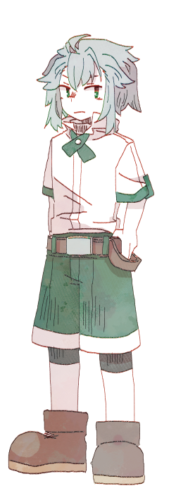

↓↓↓

「……お前か。足は引っ張るなよ」
ジッカイの犬
【目標】Dr.シュガードに忠実である
【禁忌】Dr.シュガードを害する
あなたは犬、それも忠犬だ。
そもそものあなたは人として生まれた。
軍役の中で、兵士という名の消耗品として使われた。その末に、壊れた。
壊れたまま転がされ、死ぬのを待つだけだったあなたは、Dr.シュガードの手によって生まれ変わった。
あなたは犬としての生を全うしたい。忠実な、犬としての生を。
人の時は、そうはできなかったから。
【開示条件】
①あなたの過去について
条件：Dr.シュガードと二人きりになったうえで開示の可不可を相談し、Dr.シュガードが開示すべきと判断したとき
②自分の研究が利用された可能性について
条件：他の者から証拠を提示された上でその可能性を指摘されたとき
③セクションキーについて
条件：
Dr.シュガード／本当にDr.シュガードであると確信したとき
ジンジャーキャット／絶対にものを割ったり壊したりしないと約束させたとき
【基本情報】
あなたの研究内容は「細胞の複製」だ。医療の分野で役立てられている。
突然現れたDr.シュガードを名乗るこども。生前の面影は、あなたが一番強く感じているだろう。
あなたはシュガーディアとして生まれ直す前、「学会の異端児」としてニュースを賑わす若き異才、Dr.シュガードの姿を何度か目にしていた。
そしてそのこどもの面影に、あなたは一つ思い当たることがある。
それは、あなたの研究している「細胞の複製」を利用すれば、「新しい器」をDr.シュガードの遺体から複製することも可能だろうということ。
遺体は専門の業者に火葬された。だがその前に、複製元になる毛髪や肉片を手に入れることは、身内であるシュガーディアたちには誰でもできたはずだ。
人格の再現はそれだけではできたものではないだろうが、器を用意した手段に関して、あなたは自分の研究が利用されていると考えている。
【人間関係】
Dr.シュガード／呼び方：ドクター

「奇人変人の類」
「……とはいえ恩人で、主人とみなしている」
「俺がイヌベース扱いなのは、法に触れるかららしい」
ジンジャーキャット／呼び方：キャット

「やかましい」
「ガラス器具を壊すので、俺のセクションには入れん」
「以外と飽き性でなく、こだわる性質な気がする」
ハニーバニー／呼び方：バニー

「大人ぶりのこども」
「ドクターとこいつだけ俺が軍人だった経歴を知ってる」
「割とプライドが高い」
バターマウス／呼び方：マウス

「あまったれ」
「ベースに反してびびりなところはない」
「むしろ状況を考えず食ってかかる方だな」
【所持コード】
個人ＩＤ：410
セクション２キー：ve（小文字のブイ・小文字のイー）
連想語：salt